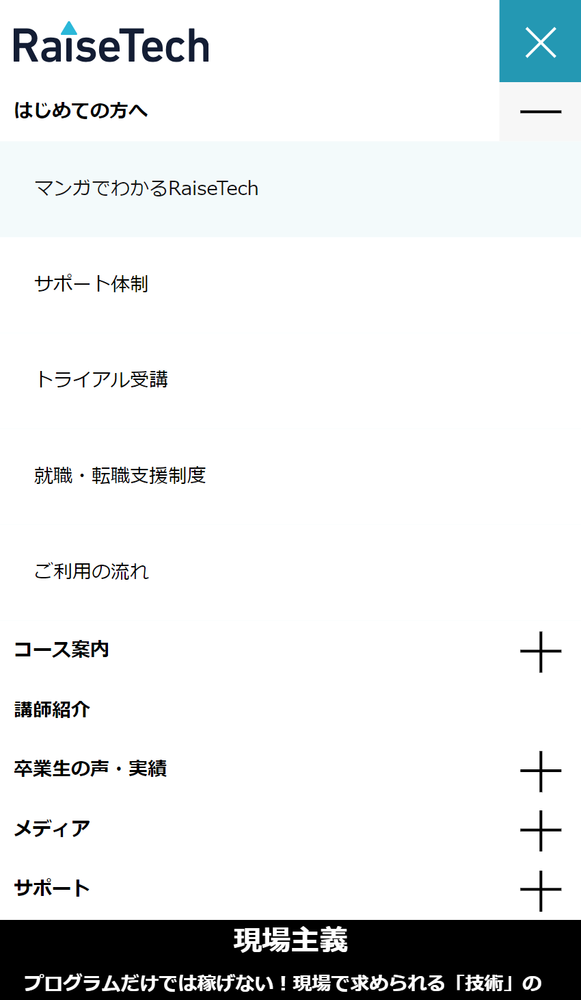

自己紹介
About
- 西前 郁美 -にしまえ いくみ-
- 学歴 / 大阪医専 看護保健学科卒業
- 趣味 / バイクツーリング、読書
- 好きな事 / 字を書くこと、ミニオン、寝ること
- 嫌いな事 / 風呂掃除、悪口をいう人、寝れない事
- ひとこと /
何事にも楽しくチャレンジし、早く戦力になれるよう 尽力したいです。 将来は、Webデザイナーとして縁の下の力持ちに なることが目標です。
できること
Skill
★3つ自信あり
★2つ少し得意
★1つこれから
HTML&CSS
サイトコーディング、模写経験あります。レスポンシブ対応、ハンバーガーメニューは特に努力しました。
JavaScript
模写課題にて利用。（ハンバーガーメニュー、ナビメニューのスライド）言語内容の理解、実践ともに不足している。
Word、Excel、PowerPoint
基本操作自信あり。前職で、資料やチラシ、報告書などの作成経験あります。
チーム力
前職が医療職ということもあり、常にチームで課題解決に向かうよう意識してきました。
経験
Works

サイト名RaiseTech（旧サイト）
URL課題
媒体HTML,CSS,JavaScript
サイトの模写について調べるところから。頑張ったところ、学習を通して学んだことを書く。